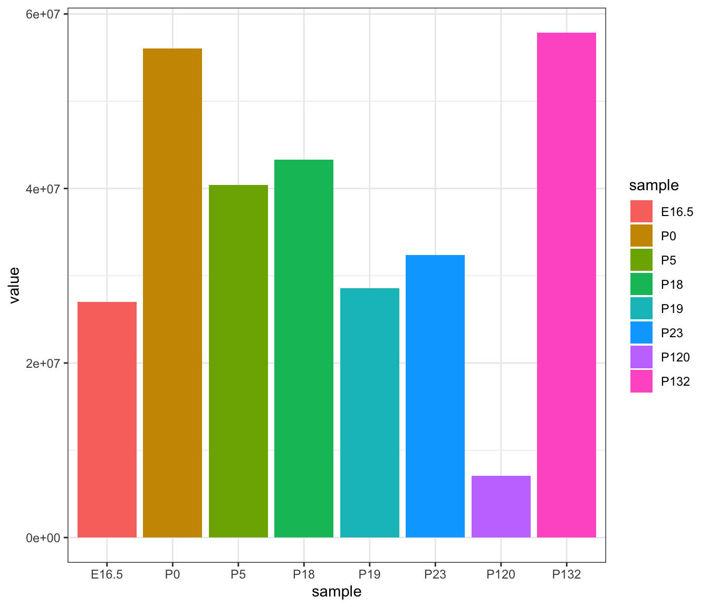
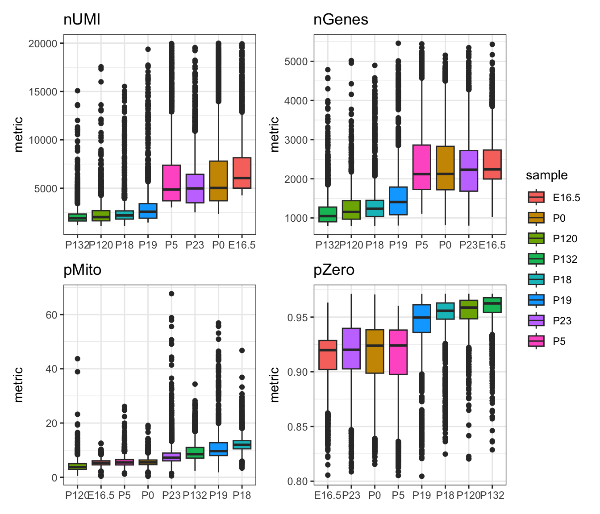
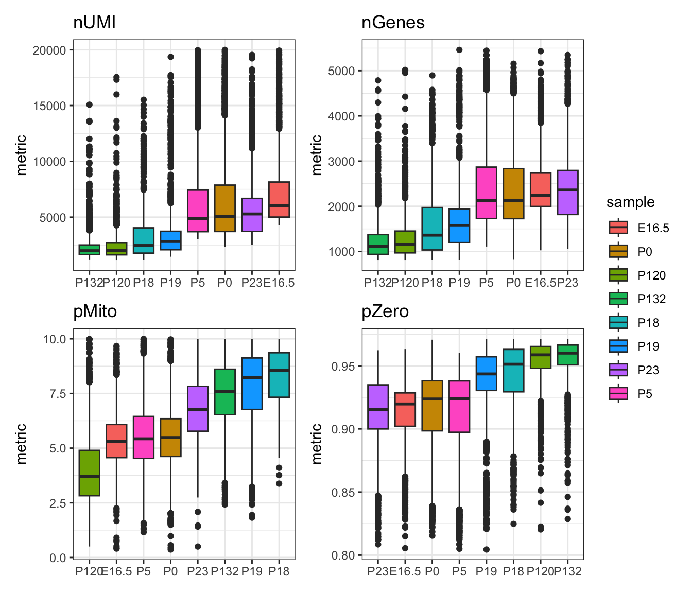
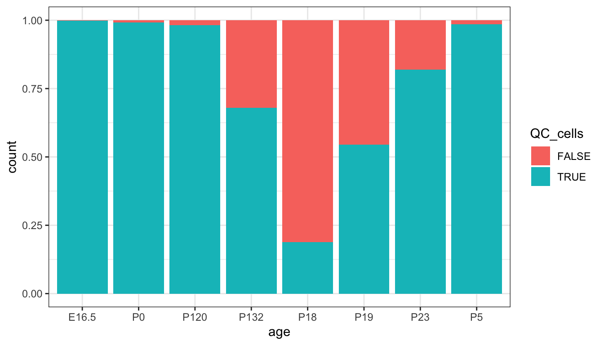
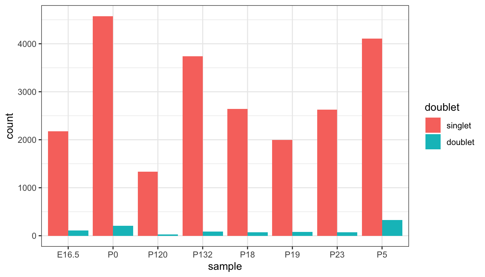
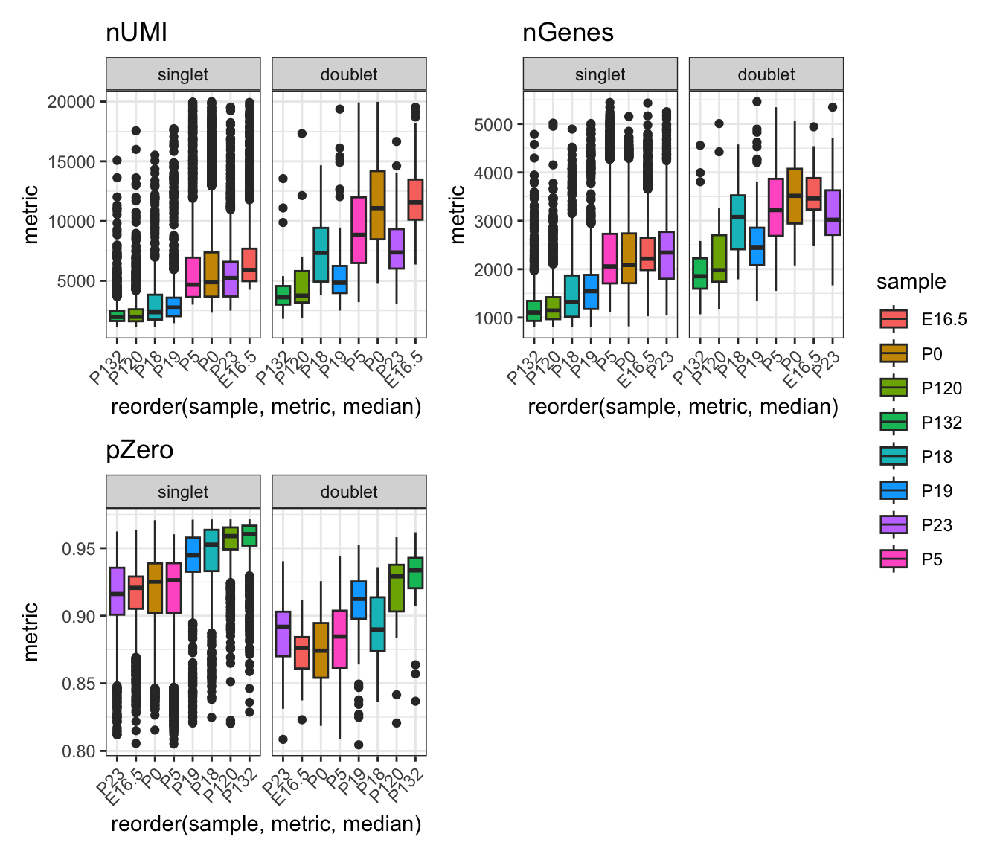
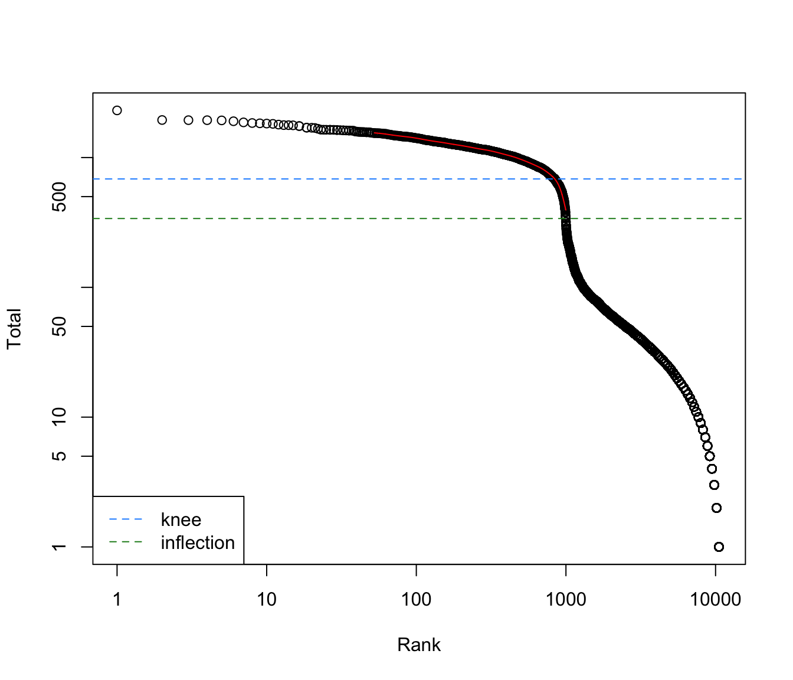
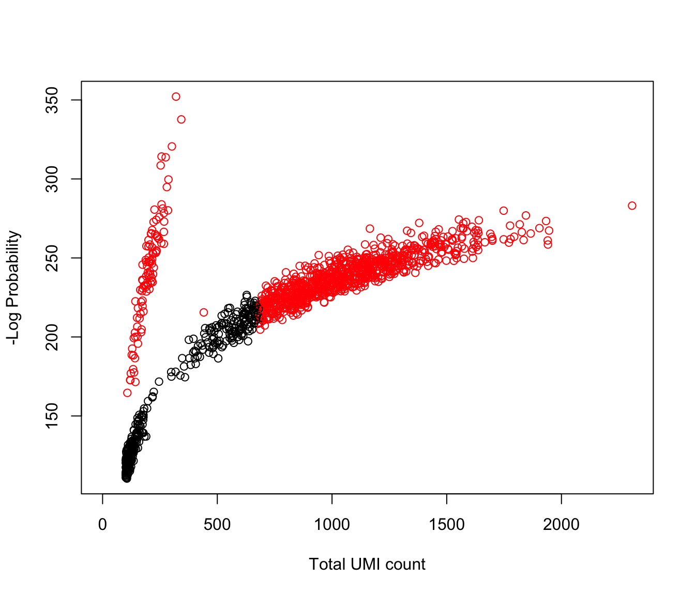

Introduction to Single-cell Pre-processing
Carissa Chen1 Sharon Long2 Pengyi Yang3
Source:vignettes/introduction_to_single-cell.Rmd
introduction_to_single-cell.RmdOverview
Description
Single-cell RNA-sequencing has allowed us to dissect cellular heterogeneity at a finer resolution than previously possible with bulk RNA-sequencing. However, the increase in dimensionality comes with its unique challenges in data processing and analysis. In this section of the workshop, we introduce the basic pipeline to check the quality of single-cell RNA-seq processed data and further perform necessary filtering to remove low-quality cells. The learning goals of this workshop is to understand the implications of filtering and learn how to detect low-quality cells.
Preparation and assumed knowledge
- Knowledge of R syntax
- Familiarity with the Single-cell data analysis guide
- Familiarity with the SingleCellExperiment class
Learning objectives
- Carry out typical single-cell processing and QC workflow
- generate appropriate QC graphics
Introduction
scRNA-seq data is often plagued by various sources of noise and technical artifacts, such as low-quality cells (eg. cells with high rates of cell death as a result of single-cell dissociation), doublets, and ambient RNA contamination.
Adequately filtering the data to retain good quality cells, while minimising technical artifacts is crucial to ensure the accuracy and reliability of downstream analyses. Without proper filtering, results can be skewed by spurious signals, leading to inaccurate biological interpretations and conclusions.
Typical procedures for scRNA-seq filtering include the removal of cells with low or excessively high library sizes, cells with a high proportion of mitochondrial gene expression (indicative of high cell death) and removal of doublet cells (ie. when two cells are encapsulated into one droplet, confounding what is considered ‘real cells’). These steps help to retain high-quality data that accurately reflects the true biological state of the sampled cells, thereby enabling more robust and meaningful insights from the scRNA-seq experiment.
In this workshop, we will use a mouse scRNA-seq data profiling the hippocampus from Hochgerner et al. (2018). The original data can be accessed from GEO with the accession number GSE104323. The original data contains 8 timepoints from E16.5 to postnatal 132 days, and 24 unique cell types.
While we do not have access to the count matrices directly after running CellRanger, for the purposes of demonstration, we will assume that the dataset is the raw, un-processed count matrix, where each age is a separate sample.
Loading libraries and the data
First, let us load common packages for single-cell processing.
library(SingleCellExperiment)
library(scater)
library(ggthemes)
library(scran)
library(ggpubr)
library(ggplot2)
library(reshape2)
library(patchwork)
library(Seurat)
library(parallel)
library(BiocParallel)
library(scDblFinder)
library(DropletUtils)
theme_set(theme_bw())We provide the original data downloaded from GSE104323 into a SingleCellExperiment class object. It contains 24,185 cells and 27,932 genes. Below are typical functions to interact with the SCE object.
# code to load data
load(file="../data/hippocampus_all_ages.rda")
sce <- hippocampus_all_ages
rm(hippocampus_all_ages)
dim(sce)
#> [1] 27932 24185
# colData(sce) # view column metadata
# rowData(sce) # view row metadata
# counts(sce) # extract counts matrix, warning - very large
# rownames(sce) # extract rownames and column names as usualInitial inspection of the data
Examining sequencing depth
Assuming sequencing samples are separated by age, we can first look at the reads obtained per library by aggregating the total cell counts by age.
reads <- matrixStats::colSums2(as.matrix(counts(sce)))
reads <- sapply(split(1:length(reads), sce$age), function(x) sum(x))
reads <- reshape2::melt(reads)
reads$sample <- rownames(reads)
reads$sample <- factor(reads$sample, levels=c("E16.5", "P0", "P5", "P18", "P19", "P23", "P120", "P132"))
ggplot(reads, aes(y=value, x=sample, fill=sample)) +
geom_col()
Interpretation:
From this bar plot, we see that each age has different, particularly P120. Given the sequencing was not run in separate batches, we ideally expect the total reads to be approximately similar. Therefore, at this stage, we can potentially flag low quality cells for samples with low total reads.
Generating QC metrics using scater
Next, we use addPerCellQC function from the
scater package to calculate per-cell QC metrics for our
count matrix. This gives us the sum of counts (‘sum’), number of
detected features (‘detected’) and we also calculate the same metrics
for mitochondrial genes, a common method to measure cell death. We
measure the sparsity of gene expression in a cell by calculating the
percentage of zero counts per cell.
subset <- list(mito = grep("^MT-", rownames(sce)))
sce <- scater::addPerCellQC(sce, assay.type = "counts", subsets=subset, threshold=0)
sce$pZero <- matrixStats::colSums2(as.matrix(counts(sce)) == 0)/nrow(sce)
colnames(colData(sce))[13:18] <- c("nUMI", "nGenes", "nMito", "mitoGenes_detected", "pMito", "total")
head(colData(sce))
#> DataFrame with 6 rows and 19 columns
#> sample_name source_name organism
#> <character> <character> <character>
#> 10X79_1_TCTACCATGCCTAA 10X79_1_TCTACCATGCCT.. dentate gyrus Mus musculus
#> 10X79_2_GTACTAGTGAACAT 10X79_2_GTACTAGTGAAC.. dentate gyrus Mus musculus
#> 10X79_2_AATCAGTACCTACA 10X79_2_AATCAGTACCTA.. dentate gyrus Mus musculus
#> 10X79_1_CGGGTTCTTGAGGT 10X79_1_CGGGTTCTTGAG.. dentate gyrus Mus musculus
#> 10X79_1_GTGGAAGGCGTACA 10X79_1_GTGGAAGGCGTA.. dentate gyrus Mus musculus
#> 10X79_1_GTCCGCAAGCCATT 10X79_1_GTCCGCAAGCCA.. dentate gyrus Mus musculus
#> strain age sex_of_pooled_animals
#> <character> <character> <character>
#> 10X79_1_TCTACCATGCCTAA hGFAP-GFP P120 2males+1female
#> 10X79_2_GTACTAGTGAACAT C57Bl/6 P19 female
#> 10X79_2_AATCAGTACCTACA C57Bl/6 P19 female
#> 10X79_1_CGGGTTCTTGAGGT hGFAP-GFP P120 2males+1female
#> 10X79_1_GTGGAAGGCGTACA hGFAP-GFP P120 2males+1female
#> 10X79_1_GTCCGCAAGCCATT hGFAP-GFP P120 2males+1female
#> cell_cluster molecule srr_run_accession
#> <character> <character> <character>
#> 10X79_1_TCTACCATGCCTAA RGL total RNA SRR6090459
#> 10X79_2_GTACTAGTGAACAT RGL total RNA SRR6099081
#> 10X79_2_AATCAGTACCTACA RGL total RNA SRR6099074
#> 10X79_1_CGGGTTCTTGAGGT RGL total RNA SRR6090410
#> 10X79_1_GTGGAAGGCGTACA RGL total RNA SRR6090448
#> 10X79_1_GTCCGCAAGCCATT RGL total RNA SRR6090444
#> raw_file_original_file_name umi_cellular_barcode
#> <character> <character>
#> 10X79_1_TCTACCATGCCTAA 10X79_1_TCTACCATGCCT.. TATGTCCCAG_TCTACCATG..
#> 10X79_2_GTACTAGTGAACAT 10X79_2_GTACTAGTGAAC.. CAGCTATTGG_GTACTAGTG..
#> 10X79_2_AATCAGTACCTACA 10X79_2_AATCAGTACCTA.. TTTAGCCTAT_AATCAGTAC..
#> 10X79_1_CGGGTTCTTGAGGT 10X79_1_CGGGTTCTTGAG.. CGTGAAGCGT_CGGGTTCTT..
#> 10X79_1_GTGGAAGGCGTACA 10X79_1_GTGGAAGGCGTA.. GGAGCCCGAC_GTGGAAGGC..
#> 10X79_1_GTCCGCAAGCCATT 10X79_1_GTCCGCAAGCCA.. ACAACCAGTC_GTCCGCAAG..
#> cell_name nUMI nGenes nMito
#> <character> <numeric> <numeric> <numeric>
#> 10X79_1_TCTACCATGCCTAA 10X79_1_TCTACCATGCCTAA 2287 1201 0
#> 10X79_2_GTACTAGTGAACAT 10X79_2_GTACTAGTGAACAT 1847 1128 0
#> 10X79_2_AATCAGTACCTACA 10X79_2_AATCAGTACCTACA 2216 1202 0
#> 10X79_1_CGGGTTCTTGAGGT 10X79_1_CGGGTTCTTGAGGT 1455 999 0
#> 10X79_1_GTGGAAGGCGTACA 10X79_1_GTGGAAGGCGTACA 1553 943 0
#> 10X79_1_GTCCGCAAGCCATT 10X79_1_GTCCGCAAGCCATT 2568 1534 0
#> mitoGenes_detected pMito total pZero
#> <numeric> <numeric> <numeric> <numeric>
#> 10X79_1_TCTACCATGCCTAA 0 0 2287 0.957003
#> 10X79_2_GTACTAGTGAACAT 0 0 1847 0.959616
#> 10X79_2_AATCAGTACCTACA 0 0 2216 0.956967
#> 10X79_1_CGGGTTCTTGAGGT 0 0 1455 0.964235
#> 10X79_1_GTGGAAGGCGTACA 0 0 1553 0.966239
#> 10X79_1_GTCCGCAAGCCATT 0 0 2568 0.945081Then we visualise the per-cell QC metrics using a boxplot visualisation.
Discussion:
- What can you infer about the quality of the samples from these boxplots?
- How would you choose the appropriate filtering thresholds?
- Should separate filtering thresholds be applied to each sample?
metrics <- c("nUMI", "nGenes", "pMito", "pZero", "age")
qc_plot <- colData(sce)[ , metrics]
gg_list = list()
for (i in 1:ncol(qc_plot)) {
df <- data.frame(sample = qc_plot$age,
metric = qc_plot[, i])
metric_name <- colnames(qc_plot)[i]
gg_list[[i]] <- ggplot(df, aes(x = reorder(sample, metric, median), y=metric, fill=sample)) +
geom_boxplot() +
ggtitle(metric_name) +
theme(axis.title.x = element_blank())
}
patchwork::wrap_plots(gg_list[1:4], ncol=2, nrow=2, guides="collect")
Performing cell filtering
Now that we have visualised the distribution of our QC metrics using a boxplot, it becomes clearer which thresholds we could apply to remove outlier cells. Generally, we try to remove cells that have very low UMI counts and very sparse cells with a high percentage of zero counts as they usually indicate cells with insufficient sequencing depth. We also remove cells with extremely high UMI counts as that may indicate the presence of doublets. Lastly, we usually set a threshold according to mitochondrial gene expression to remove cells that have high rates of cell death occurring.
It is important to keep in mind that all these cut-offs are dataset-dependent and in some cases, you may want to set lower or more stringent thresholds to avoid removing rare cell populations or to capture cell types which may have specific characteristics. A study by Orsorio et al. has performed a systematic evaluation of mitochondrial proportion in human and mice tissues which could serve as a guide to decide the appropriate mitochondrial threshold depending on your data.
In this step, we visualise the distribution of the QC metrics after performing cell filtering.
metrics <- c("nUMI", "nGenes", "pMito", "pZero", "age")
qc_plot <- colData(sce)[ , metrics]
idx = qc_plot$nUMI < 20000 & qc_plot$pMito < 10 & qc_plot$pZero < 0.98
qc_plot = qc_plot[idx, ]
filt_gg = lapply(1:ncol(qc_plot), function(x) {
df <- data.frame(sample = qc_plot$age,
metric = qc_plot[, x])
metric_name <- colnames(qc_plot)[x]
g <- ggplot(df, aes(x = reorder(sample, metric, median), y=metric, fill=sample)) +
geom_boxplot() +
ggtitle(metric_name) +
theme(axis.title.x = element_blank())
})
patchwork::wrap_plots(filt_gg[1:4], ncol=2, nrow=2, guides="collect")
We can also visualise how many cells are lost/remaining after applying the filtering thresholds. Based on these visualisations, which filtering criteria do you think has the most impact on the number of cells retained?
metrics <- c("nUMI", "nGenes", "pMito", "pZero", "age")
qc_plot <- colData(sce)[ , metrics]
idx <- qc_plot$nUMI < 20000 & qc_plot$pMito < 10 & qc_plot$pZero < 0.98
qc_plot$QC_cells <- idx
qc_plot <- as.data.frame(qc_plot)
ggplot(qc_plot, aes(x=age, fill = QC_cells)) +
geom_bar(position="fill")
Performing doublet detection using scDblFinder
Single-cell RNA-seq experimental protocols require a cell suspension to be distributed across single droplets (droplet microfluidics) or single wells (well-based) with the intention of capturing one cell per reaction volume (ie. a singlet). Then, mRNA molecules are labeled with a unique molecular code (UMI barcode). However, during the distribution step, one droplet or well may capture more than one cell, creating a ‘doublet’ cell that is then sequenced as a single cell. The doublet rate (i.e., the proportion of doublets) in a scRNA-seq experiment depends on the throughput and protocol. There are two major classes of doublets: homotypic doublets, which are formed by transcriptionally similar cells; and heterotypic doublets, which are formed by cells of distinct types, lineages, or states.
Hence, doublet detection and removal is an important step in
pre-processing as it can bias the interpretation of downstream analyses
such as differential gene expression analysis, cell clustering and
trajectory analysis. Here, we use scDblFinder which has
been shown to be competitive with other
top-performing methods according to this excellent benchmark by Xi et al..
After running scDblFinder, we first plot a bar plot to
visualise how many doublets we have in our dataset. Then, we can
additionally confirm they are indeed doublets by visualisation their
distribution of UMI counts, number of genes and proportion of zero
expression compared to singlets.
Discussion:
- What do you notice about the differences in distribution between the singlets and doublets?
- Is this expected and why?
sce <- scDblFinder::scDblFinder(sce, samples="age", clusters=TRUE, BPPARAM=BiocParallel::MulticoreParam(3))
qc_plot <- data.frame(sample = sce$age, doublet = sce$scDblFinder.class)
ggplot(qc_plot, aes(x=sample,fill = doublet)) +
geom_bar(position="dodge")
metrics <- c("nUMI", "nGenes", "pMito", "pZero", "age", "scDblFinder.class")
qc_plot <- colData(sce)[ , metrics]
idx = qc_plot$nUMI < 20000 & qc_plot$pMito < 10 & qc_plot$pZero < 0.98
qc_plot$QC_cells <- idx
gg_list <- list()
for (i in 1:ncol(qc_plot)) {
df <- data.frame(metric = qc_plot[, i],
sample = qc_plot[, "age"],
doublet_class = qc_plot[, "scDblFinder.class"],
QC_cells = qc_plot[, "QC_cells"])
df <- df[df$QC_cells == TRUE, ]
metric_name <- colnames(qc_plot)[i]
gg_list[[i]] <- ggplot(df, aes(x = reorder(sample, metric, median), y=metric, fill=sample)) +
geom_boxplot() +
facet_wrap(~doublet_class, ncol = 2) +
ggtitle(metric_name) +
theme(axis.text.x = element_text(angle=45, vjust=1, hjust=1))
}
patchwork::wrap_plots(gg_list[c(1,2,4)], ncol=2, nrow=2, guides="collect")
Interpretation:
From the boxplots, we see that the doublet population generally has higher total UMI count, number of genes expressed and lower proportion of zero counts. This in line with our expectations, because it is has predicted the combined transcriptomic expression from two cells instead of a single cell.
Save the processed data
# idx = sce$nUMI < 20000 & sce$pMito < 10 & sce$pZero < 0.98 & sce$scDblFinder.class == "singlet"
# sce <- sce[, idx]
# save(sce, file="data/hippocampus_processed.rda")Extension – filtering empty droplets using
DropletUtils
Empty droplets often contain RNA from the ambient solution, resulting
in non-zero counts after debarcoding. Thus, to remove the experimental
artifacts, we want to distinguish between empty droplets and real cells.
the emptyDrops function testing each barcode’s expression
profile for significant deviation from the ambient profile.
Again, as we are not working with the raw CellRanger output, we will simulate a count matrix with empty droplets to demonstrate the utility of this step. Note, this step is typically run on the raw barcode matrix from CellRanger, where empty droplets have not been removed by default. While it is perfectly fine to use the filtered barcode matrix, depending on situation, it may be desirable to start from the unfiltered matrix to preserve more cells.
We compute the statistics using the barcodeRanks
function, and then create the plot as shown below. This plot shows the
log-total count against the log-rank of each barcode, where the highest
ranked barcodes have the lowest total UMI counts. It also shows the
inflection and knee points on the curve, corresponding to the division
of the total count distribution, predicting the difference between empty
droplets and cell-containing droplets.
br.out <- barcodeRanks(my.counts)
# Making a plot.
plot(br.out$rank, br.out$total, log="xy", xlab="Rank", ylab="Total")
o <- order(br.out$rank)
lines(br.out$rank[o], br.out$fitted[o], col="red")
abline(h=metadata(br.out)$knee, col="dodgerblue", lty=2)
abline(h=metadata(br.out)$inflection, col="forestgreen", lty=2)
legend("bottomleft", lty=2, col=c("dodgerblue", "forestgreen"),
legend=c("knee", "inflection"))
Droplets with significant deviations from the ambient profile are detected at a specified FDR threshold, e.g., with FDR below 1%. These can be considered to be cell-containing droplets, with a frequency of false positives (i.e., empty droplets) at the specified FDR. Furthermore, droplets with very large counts are automatically retained by setting their p-values to zero. This avoids discarding droplets containing cells that are very similar to the ambient profile.
set.seed(100)
e.out <- emptyDrops(my.counts)
e.out
#> DataFrame with 11100 rows and 5 columns
#> Total LogProb PValue Limited FDR
#> <integer> <numeric> <numeric> <logical> <numeric>
#> 1 2 NA NA NA NA
#> 2 9 NA NA NA NA
#> 3 20 NA NA NA NA
#> 4 20 NA NA NA NA
#> 5 1 NA NA NA NA
#> ... ... ... ... ... ...
#> 11096 215 -246.428 9.999e-05 TRUE 0.00013799
#> 11097 201 -250.234 9.999e-05 TRUE 0.00013799
#> 11098 247 -275.905 9.999e-05 TRUE 0.00013799
#> 11099 191 -228.763 9.999e-05 TRUE 0.00013799
#> 11100 198 -233.043 9.999e-05 TRUE 0.00013799
is.cell <- e.out$FDR <= 0.01
sum(is.cell, na.rm=TRUE)
#> [1] 943Lastly, we can plot a diagnostic plot such as the total UMI counts against the negative log-probability. Droplets detected as real cells should have a large negative log-probabilities or very large total counts.
plot(e.out$Total, -e.out$LogProb, col=ifelse(is.cell, "red", "black"),
xlab="Total UMI count", ylab="-Log Probability")